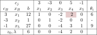

线性规划¶
定义
规划问题：给定一个目标函数\(f(x_1, \dots, x_n)\)和一系列约束条件，求满足所有约束条件的情况下，改变决策变量\(x_1, x_2, \cdots, x_n\)使得目标函数所能达到的最大值或最小值。当目标函数取最大（最小）值时，决策变量的值称规划问题的解。
线性规划：目标函数和约束条件均为 线性 的优化问题
线性规划模型的标准形式为：
其中\(a_{ij}, b_i, c_i\)为常数，分别使用矩阵\(A, b, c^T\)进行表示。决策变量\((x_1, x_2, \cdots, x_n)^T\)使用向量\(x\)进行表示，则标准型可以写作：
如果\(\mathrm r(A) < m\)，则部分约束条件可以相互抵消，以上只讨论\(\mathrm r(A) = m\)的情况。
如果约束中含有不等式，则可以通过添加松弛变量与剩余变量转变为等式
- 松弛变量：\(a_{i1}x_1 + a_{i2}x_2 + \cdots + a_{in}x_n \leq b_i\)加入松弛变量\(x_{n+1}\)后转为\(a_{i1}x_1 + a_{i2}x_2 + \cdots + a_{in}x_n + x_{n+1}= b_i\)
- 剩余变量：\(a_{j1}x_1 + a_{j2}x_2 + \cdots + a_{jn}x_n \geq b_j\)加入剩余变量\(x_{n+1}\)后转为\(a_{j1}x_1 + a_{j2}x_2 + \cdots + a_{jn}x_n - x_{n+1}= b_j\)
若某个决策变量\(x_i\)的取值范围为\(\leq\)，则将\(x_i\)替换为\(x_i' = -x_i\)。
对于线性规划中的不等式约束，若在最优时该约束为等式，则称为紧约束，否则称为非紧约束。
求解线性规划¶
线性规划可以通过图形法、单纯形法等方法求解
图形法¶
图形法只能用于求解包含两个决策变量的线性规划问题。步骤可以列举如下：
- 在坐标轴上绘制出所有的约束条件，确定可行域
- 将目标函数\(z = c_1x_1 + c_2x_2\)改写为\(x_2 = \frac{z - c_1x_1}{c_2}\)，其斜率为\(-\frac{c_1}{c_2}\)
- 在可行域中寻找使得截距最大（最小）且斜率为\(-\frac{c_1}{c_2}\)的直线。该截距为目标函数的\(1/c_2\)
- 若可行域为空，则线性规划无解
- 若直线可以无限向优化方向平移，则线性规划无界
- 若最优时直线与约束条件的斜率相同，则线性规划有无数解
- 否则线性规划有唯一最优解
单纯形法¶
已知矩阵\(A\)满秩，构成矩阵\(A\)的列向量的极大线性无关组包含\(m\)个列向量。因此可以将矩阵\(A\)作如下划分：
相似地，向量\(x\)也可以作如下划分：
其中\(B\)为可逆矩阵。若不存在这样的矩阵，将矩阵\(A\)的各列进行交换即可。
基、基向量与基变量
矩阵\(B\)称为线性规划的 基 。 基 中的各个列向量\(P_j\)为 基向量 ，对应的决策变量称为 基变量 。分割后非齐次线性方程组\(Ax=b\)转化为：
由于方阵\(B\)满秩，有\(x_B = B^{-1}(b - Nx_N)\)。其中\(x_N\)为自由变量。\(-B^{-1}N\)中的列向量为方程\(Ax=b\)的基础解系。不妨设\(x_N = 0\)，则\(x_B = B^{-1}b\)为线性方程组的一个解，称为基解。
可行解与可行基
若\(x_B\geq 0\)，则解\(x = \begin{bmatrix} x_B \\ x_N \end{bmatrix}\)满足非负约束，为 基可行解 ，对应的基称为 可行基 。
基解与基可行解满足如下性质：
- 由于矩阵\(A\)共\(n\)列，从其中选取\(m\)列，有\(\binom{n}{m}\)种选取方式，而只有组成线性无关的\(m\)个向量才能构成一组基，因此基解的数目不会超过\(\binom nm\)。
- \(X\)为基可行解当且仅当\(X\)的非零分量对应的列向量线性无关。基可行解是可行域的顶点。
原理¶
如下针对目标函数极大化的线性规划问题，对于目标函数极小化的线性规划问题，可以将目标函数取负，即得到需要极大化的目标函数。
单纯形法的思路：
- 先找出一个基可行解
- 判断当前基可行解是否最优
- 若最优，结束
- 若不是最优，则转向相邻的基可行解
状态转移¶
设初始基为\(B\)。将方程\(Ax=b\)左右两边同时左乘\(B^{-1}\)，有\((B^{-1}A)x = B^{-1}b\)，即：
设\(B^{-1}N = \{d_{ij}\}_{m\times(n-m)}\)。根据\(x_B = B^{-1}b - B^{-1}Nx_N\)，对于第\(i\)个分量，有：
目标函数值¶
对线性规划约束条件进行可逆线性变换（右乘可逆矩阵）不会改变线性规划的解。为简化计算，不妨假设矩阵\(A\)的一个基矩阵为单位矩阵，即：
显然，单位矩阵\(I\)是\(A\)的基，对应的基解\(x_B=b - Nx_N\)。将向量\(c\)分为\(c_B\)与\(c_N\)，分别对应\(x_B\)与\(x_N\)，此时目标函数可以计算为：
设向量\(\lambda = c_N - c_B^TN\)，则\(\frac{\partial z}{\partial x_N} = \lambda\)。
定理
- 若对于某个基可行解\(x\)，有\(\lambda < 0\)，说明\(x\)为最优解
- 若对于某个基可行解\(x\)，有\(\lambda \leq 0\)且\(\lambda\)存在为零的分量，说明原问题有无数个最优解
- 若对于某个基可行解\(x\)，向量\(\lambda\)存在一个\(\lambda_{m + i} > 0\)，且矩阵\(A\)对应的列向量\(P_{m + i}\leq 0\)，则原问题无界
基的迭代¶
在迭代过程中需要决定换入的基与换出的基：
- 使用贪心算法选择换入的基，选择梯度最大（与\(\lambda\)最大正分量对应）的决策变量换入，\(i = \arg\max \lambda\)
- 对于换入变量\(x_i\)，换出的基\(x_j\)应当尽可能保证是可行解。根据\(x_B = b - Nx_N\geq 0\)，得\(Nx_N \leq b - x_B\)，有\(j = \arg\min _{j} \frac{b_j}{a_{ij}}\)
举例
对于如下线性规划问题：
列出单纯形表如下所示：

将变量\(x_4\)转入基变量，\(x_1\)转出基变量，得到如下单纯形表：
两阶段法¶
当\(A\)不便于计算出基\(B\)时，可以在每一个约束条件中引入人工变量。第一阶段的开始状态，所有的基变量都是人工变量，目标函数为人工变量之和，向最小值方向优化。通过单纯形法逐步将人工变量换出基变量。
注意
如果某个人工变量在基变量中，但\(\lambda \leq 0\)，则线性规划无可行解。
将所有的人工变量换出基变量，此时所有的人工变量取\(0\)。删去人工变量并将目标函数替换为原问题的目标函数，得到第二阶段开始状态的单纯形表。
线性规划解的性质¶
根据图解法，有如下结论：
- 可行域是一个凸集。对于可行域\(X\)中的任意两点\(x = (x_1, x_2, \cdots, x_n)\in S\)与\(y = (y_1, y_2, \cdots, y_n)\in S\)，有\(\alpha x + (1 - \alpha) y \in S, 0\leq \alpha \leq 1\)
- 凸集中的任何一个点都可以表示为凸集各个顶点的凸组合
- 最优解（如果存在）在可行域的边界上，且可行域的至少一个顶点是最优解
线性规划的对偶问题¶
每个原问题对应且仅对应一个对偶问题，对偶问题的对偶问题是原问题。
对于如下形式的原问题：
其对偶问题为：
假设原问题向极大值优化，对偶问题有如下性质
- 对偶问题向极小值优化
- 目标函数的系数是原问题的约束条件系数
- 约束条件系数是原问题目标函数的系数
- 原问题中\(\geq 0\)、\(\leq 0\)的变量分别对应对偶问题中\(\geq\)、\(\leq\)类型的约束
- 原问题中\(\geq\)、\(\leq\)类型的约束分别对应对偶问题中\(\leq 0\)、\(\geq 0\)的变量
- 任何\(=\)类型的约束对应自由变量，反之亦然。
原问题的最优目标函数等于对偶问题的最优目标函数。且对偶问题最优解会以负值的形式出现在原问题最优单纯形表的\(\lambda\)部分。即，\(\lambda = -Y^*\)
线性规划的对偶性¶
考虑如下形式的原问题\((P)\)与对偶问题\((D)\)
对偶定理¶
弱对偶定理¶
设\((P), (D)\)的一组可行解分别为\(x, y\)，则有\(c^Tx \leq b^Ty\)
证明
考虑\(y^TAx\)，有：
- \(y^TAx = (A^Ty)^TX \geq c^TX\)
- \(y^TAx \leq y^Tb = b^T y\)
根据弱对偶定理，可以得出如下结论：
- 原问题的目标函数值是对偶问题目标函数值的下界，对偶问题目标函数值是原问题目标函数值的上界
- 若原问题目标函数值无上界等价于对偶问题无解，若对偶问题目标函数值无下界等价于原问题无解
最优性定理¶
设\((P), (D)\)的一组可行解分别为\(x^*, y^*\)，若\(c^Tx^* = b^Ty^*\)，则\(x^*, y^*\)分别为各自问题的最优解。
证明
根据弱对偶定理，有\(c^Tx\leq b^Ty^* = c^Tx^*\leq b^Ty\)
最优解的对偶性¶
若\(B\)为\((P)\)的最优基，则\((D)\)的最优解为\(y^* = c_BB^{-1}\)。若\((P)\)和\((D)\)均有可行解，则两者均有有界最优解，并且两者的最优目标函数值相等。
互补松弛定理¶
如果原问题\((P)\)中某一约束条件对应的对偶变量值大于\(0\)，则与该对偶变量对应的约束条件取等式。相反，如果某一约束条件取不等式，则对应的对偶变量值为\(0\)。
注意
该定理的逆命题不成立，即当原问题中某一约束条件取等式时，对应的对偶变量值无法确定是否为\(0\)
利用互补松弛性可以通过求解对偶问题的最优解从而简化原问题的求解
影子价格¶
考虑形如\((P)\)的线性规划问题，当某个约束条件的数值变动一个单位而其他约束条件保持不变时，该变动对最优目标函数造成的影响。对应经济学中边际成本的概念。
- 每个约束对应一个影子价格
- \(y = \frac{\partial z}{\partial b}\)
影子价格反映资源在系统内的稀缺程度，当约束条件为不满足时，该资源的量在系统中实际上不受约束，因此影子价格为\(0\)。
对偶单纯形法¶
求解形如\((P)\)的线性规划问题的思路为控制\(B^{-1}b \geq 0\)寻找使得\(C-C_{B}B^{-1}A\leq 0\)的基。对偶单纯形法与之相反，保持\(C-C_{B}B^{-1}A\leq 0\)，寻找使得\(B^{-1}b \geq 0\)的一组基。
换入变量的确定与单纯形法相同
线性规划的灵敏度¶
灵敏度讨论线性规划中参数变化对线性规划目标函数值的影响，应当注意，如果参数变动过大，可能会导致线性规划解发生变化。
考虑形如下式的线性规划：
其最优单纯形表为：
任何系数的变化都会造成两种情况：
- 最优解不发生变化
- 最优解发生变化
目标函数系数的灵敏度¶
当目标函数系数发生变化时，如果最优解不发生变化，则\(\frac{\partial Z}{\partial C} = X\)。
- 一个目标函数系数发生变化，最优解不发生变化的充要条件是变化后的检验数仍不超过\(0\)。
- 多个目标函数系数发生变化，最优解不发生变化的充分条件是各个系数变化的幅度满足\(100\%\)法则。
100%法则
定义\(r_i = |\frac{\Delta c_i}{u_i}|\)，其中\(u_i\)为系数\(c_i\)允许变化的最大幅度。若\(\sum r_i < 1\)，则最优解不发生变化。
约束条件的灵敏度¶
当约束条件发生变化时，如果单纯形表中的\(b' = B^{-1}b\)不发生变化，则最优基不发生变化，否则可以使用对偶单纯形法求出新的最优基。
注意
在某些情况下，即使最优基不发生变化，最优解也会发生变化。
设原问题中\(b_1\)允许变化的范围为\(\lambda\)，则：
如果最优基不变，则对偶问题的最优解不变，即影子价格不变。影子价格的变化规律仍满足\(100\%\)法则。
添加新变量或新约束的灵敏度¶
添加新变量时，计算新变量的检验数，如果检验数小于等于\(0\)，则新加入的变量的最优解为\(0\)，不会对原最优解产生影响。
添加新约束时，计算约束在当前结果下是否满足，如果约束满足则最优解不变，否则最优解改变，可以使用对偶单纯形法进行求解。
改变系数矩阵的灵敏度¶
计算\(A' = B^{-1}A\)，然后使用单纯形法或对偶单纯形法进行求解。